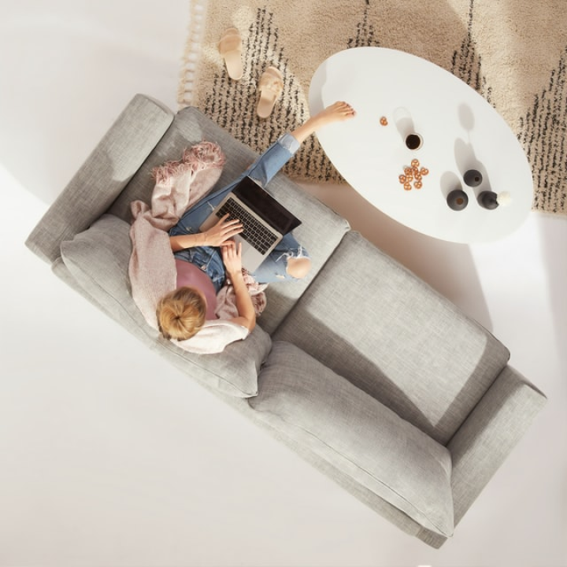

Acheter vos meubles d'occasion directement auprès de marques made in France
Faites vos achats directement auprès des boutiques officielles d’occasion de mobilier et déco made in France. Parmi les pépites que vous pourrez chiner vous trouverez des articles de SAV reconditionnés, des modèles d’exposition ou encore des prototypes. Découvrez également des articles neufs issus de l’upcycling.
Tout cela à des prix imbattables !

Les ventes flash anti-gaspi
Ponctuelles et éphémères, ces ventes à stocks limités permettent de limiter le gaspillage en facilitant le destockage de produits neufs en parfait état. Leur seul défaut ? Faire partie d’anciennes collections.
Chez Repetita, ces produits neufs comme les collections à légeres imperfections sont mis à l’honneur le temps d’une vente éphémère afin qu’ils trouvent leur nouvelle maison !
Acheter d'occasion auprès d'un particulier
Chez Repetita, nous accueillons aussi les particuliers comme vous et moi qui souhaitent vendre leurs mobiliers ou leurs objets de déco d’occasion.
Rien de plus simple !
Vous chinez parmi les différents univers de la maison et trouvez votr bonheur d’occasion.
Le vendeur a ensuite quelques jours pour confirmer la vente et vous faire parvenir l’article désiré. Les frais de livraison reste à la charge de l’acheteur et pour les produits volumineux, pensez à utiliser la solution Cocolis, notre partenaire de colis-voiturage économique et écologique.
A propos de la livraison
Chez Repetita, nous mettons tous nos efforts pour vous offrir le meilleur des services et la livraison en fait partie. Lors de la mise en vente de votre meuble d’occasion, vous pourrez choisir les options de livraison qui vous sont accessibles en tant que vendeur.
Pour les objets de petites et moyennes tailles, nous travaillons avec Colissimo, Chronopost et Mondial Relay.
Pour les meubles de volume important ou très fragiles nous recommandons à nos clients de passer par Cocolis, la livraison par colis-voiturage. Une solution qui correspond à nos valeurs tant societales qu’environnementales qui permet de rentabiliser l'espace vide de particuliers ou de camions de professionnels lors de leurs déplacements. Cette solution permet des frais de livraison moins élevés et en plus vous faites un geste pour l’environnement.
Et évidemment, vous avez aussi la possibilité de remettre vos articles en main propre, cela permet de belles rencontres ;)
Acheter vos meubles d'occasion directement auprès de marques
made in France
Faites vos achats directement auprès des boutiques officielles d’occasion de mobilier et déco made in France. Parmi les pépites que vous pourrez chiner vous trouverez des articles de SAV reconditionnés, des modèles d’exposition ou encore des prototypes. Découvrez également des articles neufs issus de l’upcycling.
Tout cela à des prix imbattables !
Les ventes flash anti-gaspi
Ponctuelles et éphémères, ces ventes à stocks limités permettent de limiter le gaspillage en facilitant le destockage de produits neufs en parfait état. Leur seul défaut ? Faire partie d’anciennes collections. Chez Repetita, ces produits neufs comme les collections à légeres imperfections sont mis à l’honneur le temps d’une vente éphémère afin qu’ils trouvent leur nouvelle maison !
Acheter d'occasion auprès d'un particulier
Chez Repetita, nous accueillons aussi les particuliers comme vous et moi qui souhaitent vendre leurs mobiliers ou leurs objets de déco d’occasion. Rien de plus simple ! Vous chinez parmi les différents univers de la maison et trouvez votr bonheur d’occasion.
Le vendeur a ensuite quelques jours pour confirmer la vente et vous faire parvenir l’article désiré. Les frais de livraison reste à la charge de l’acheteur et pour les produits volumineux, pensez à utiliser la solution Cocolis, notre partenaire de colis-voiturage économique et écologique.
A propos de la livraison
Chez Repetita, nous mettons tous nos efforts pour vous offrir le meilleur des services et la livraison en fait partie. Lors de la mise en vente de votre meuble d’occasion, vous pourrez choisir les options de livraison qui vous sont accessibles en tant que vendeur.
Pour les objets de petites et moyennes tailles, nous travaillons avec Colissimo, Chronopost et Mondial Relay.
Pour les meubles de volume important ou très fragiles nous recommandons à nos clients de passer par Cocolis, la livraison par colis-voiturage. Une solution qui correspond à nos valeurs tant societales qu’environnementales qui permet de rentabiliser l'espace vide de particuliers ou de camions de professionnels lors de leurs déplacements. Cette solution permet des frais de livraison moins élevés et en plus vous faites un geste pour l’environnement.
Et évidemment, vous avez aussi la possibilité de remettre vos articles en main propre, cela permet de belles rencontres ;)